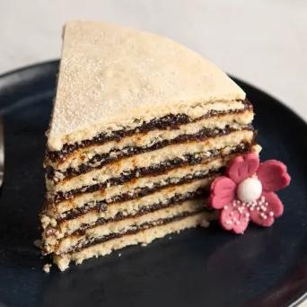
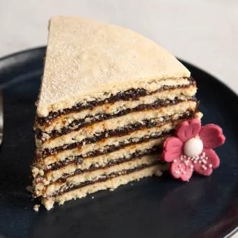
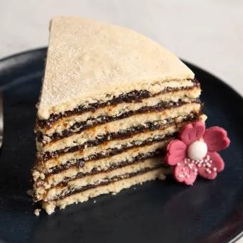
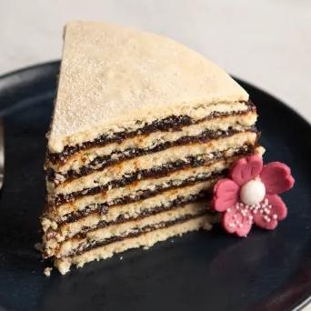

• Vínarterta.....................................1,250 ISK

• Vínarterta.....................................1,250 ISK

 • Vínarterta.....................................1,250 ISK

• Vínarterta.....................................1,250 ISK

At Odin Recipes, we bring the heart of Iceland to
your table. Inspired by the traditions of our
ancestors and the bounty of the North, our
restaurant celebrates the flavors that have shaped Icelandic culture for centuries, and teach you how
to replicate them.